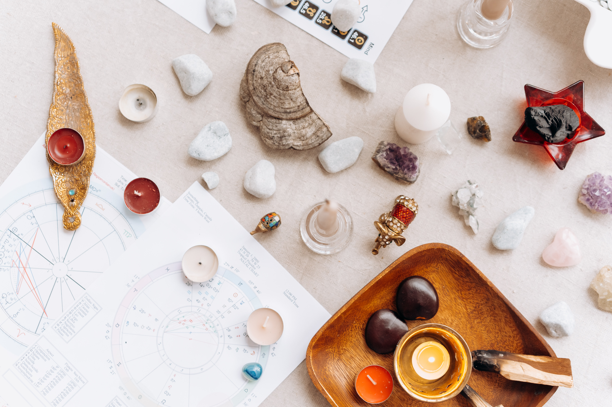

KRISTALLITERAAPIA
Kristalliteraapia - Kristalliteraapia e. tervendamine kristallide abil on alternatiivne teraapiavorm, kus kasutatakse kristallide energiat ja nende võnkesagedust erinevate füüsilis-energeetiliste blokkide eemaldamiseks. Vastavalt vajadusele paigutatakse kehale või keha ümber eri tüüpi ja omadustega kristalle, mis aitavad vabaneda stressist, pingest, valust ning tõsta vibratsioonitaset nii füüsilises kehas kui erinevates aura kihtides. Kuna kristallid toimivad nii füüsilisel, psüühilisel kui spirituaalsel tasandil tervendavad nad nii haigusseisundi füüsilist avaldumist kui ka selle tegelikku ja varjatud põhjust. Kristalle kasutasid juba muistsed rahvad. Nad olid olulised elemendid riitustel, toetasid füüsilisel ja vaimsel tasandil nende kandjaid ning abistasid ka tervendamisel. Kristallid on holistilised tervendajad. See tähendab, et nad töötavad nii füüsilisel, emotsionaalsel, mentaalsel kui ka vaimsel tasandil ehk siis kõikidel energiatasanditel. Kristallid on elektromagnetilise energia looduslikud juhid.
Kristallid aitavad
- Tasakaalustada, puhastada ja laadida aurat
- Tasakaalustada tšakraid ja emotsionaalset seisundit
- Nad aitavad kaasa keha isetervendamise protsessile
- Aitavad sul rahuneda, lõõgastuda
- Tõsta energiataset
Kristalliteraapias kasutan erinevat tüüpi ning omadustega kristalle
- Kristallkuule
- Kristallvardaid
- Üksikud lapikud kive
- Kristallsaua
- Kristallpendlit
- Tipuga kristalle energia suunamiseks ja kristallimaatriksite tegemisel
Seansi ajal oled Sa lamavas asendis (riided seljas) ja naudid kogu protsessi. Taustaks meditatiivne muusika, küünalde ja viirukite vägi ning helivibratsioon. Kristalliteraapiasse tulemiseks ei pea Sul olema küsimust, probleemi, füüsilist vaevust ega ka emotsionaalset valu. Kristalliteraapiat on hea endale aega-ajalt lubada lihtsalt lõõgastumiseks, energiataseme tõstmiseks, ning heaolu- ja armastuse tunde tekitamiseks ja suurendamiseks. Kristalliteraapial ei ole vastunäidustusi – sobib igas vanuses, samuti ka raseduse ja imetamise ajal. Suurepärane viis stressi maandamiseks ning füüsilise, emotsionaalse, mentaalse ja vaimse tasandi tasakaalustamiseks. Seda teraapiat saab teha ka grupile. Maksimaalne osalejate arv 15 inimest. Tulen Sinu poolt organiseeritud pinnale. Vajalikud joogamatid, padjad, pleedid, pimendatav ruum. Küsi pakkumist Evelin.Kornelt@gmail.com
Registreeru kristalliteraapiasseKRISTALLI-REIKI
Kristalli Reiki on võimas tervendusmeetod, kus kasutatakse Reiki toimimise põhimõtetel universaalset elujõuenergia kanaldamist kombineerituna kristallide iidse tarkuse ja väega. Reiki seansi käigus toimub tšakrate puhastus ja laadimine, aidates nii ravida sümptomit, kui ka selle põhjust. Puhta armastuse energiaga keha laadimine aitab vabaneda sissejuurdunud ja mittetoimivatest käitumis- ja mõtlemise mallidest. Oled lamavas asendis (riided seljas) ja naudid kogu protsessi. Taustaks meditatiivne muusika, küünalde ja viirukite vägi ning helivibratsioon. Kristalli- Reikil ei ole vastunäidustusi – sobib igas vanuses, samuti ka raseduse ja imetamise ajal. Suurepärane viis stressi maandamiseks ning füüsilise, emotsionaalse, mentaalse ja vaimse tasandi tasakaalustamiseks.
META-EFT ehk koputamisteraapia
Koputamisteraapia ehk emotsionaalse vabaduse tehnika , mida nimetatakse ka psühholoogiliseks akupunktuuriks või nõelteta akupunktuuriks. Emotsionaalse vabaduse tehnika (inglise keeles Emocional Freedom Technique, millest ka lühend EFT) võib olla suureks abiks ärevuse, stressi, mitmete valude, sh peavalu leevendamisel, esinemise-ja eksamiärevusega toimetulekul jne. META-EFT on ülimalt efektiivne tehnika, aitamaks lahustada emotsioone lähi- ja kaugemastki minevikust, mis meid ka veel täna häirivad. Näiteks traumad, kukkumised, lahkuminekud, kellegi öeldud sõnad, ülesöömine jne. Kui tuleb sarnane situatsoon , siis meie mandelkeha annab signaali ,et asi muutub ohtlikuks. Teraapiaprotsessis saad ühendust selle negatiivse emotsiooniga ning läbi pehme koputamise akupunktidele vabastab keha neurotransmittereid ja hormoone, näiteks serotoniini, mis annavad heaolu- ja turvatunde.
Sa oled justkui halva emotsiooni sees, aga läbi koputamise ehk üle kesknärvisüsteemi keerulise reaktsiooni antakse kehale teadmine, et olukord on turvaline ja kõik on kontrolli all. Seega tekib olukord, kus inimene meenutab mõnda rasket olukorda oma elus ja samal ajal antakse mandel kehale edasi teadmine, et kõik on korras, nüüd on kõik turvaline. Tekib olukord, kus inimene mäletab negatiivset läbielamist, aga tänu koputamisele lahutatakse selle sündmuse küljest emotsioon. Järgi jääb vaid neutraalne meenutus. Teisisõnu luuakse olukord, kus ka negatiivsele mälestusele tagasi vaadates on selle küljest ära võetud negatiivne emotsioon.
Koputamisteraapia
- Toetab füüsilist tervist, vähendab stressi ja ärevust
- On turvaline, lihtne kasutada ja mitteinvasiivne. Kuigi kasutatakse Hiina meditsiini akupunktuuri punkte, toimub nendega manipuleerimine õrnalt, näpuotsi kasutades
- On üks efektiivsemaid, tulemuslikumaid ja õrnemaid tehnikaid traumade lahustamiseks ja stressi vähendamiseks
- Töötab sageli ka siis, kui ükski teine tehnika tulemusi ei anna
- On rakendatav igasuguse emotsionaalse probleemi korral, olgu selleks ärevus või masendus, lein või süütunne, viha või kurbus
- On kõigile - seda võivad õppida ka lapsed ja vanurid, seda saavad kasutada ka voodihaiged või ratastoolis inimesed, see sobib sama hästi kasutamiseks nii koolis, haiglas kui tööl
- Annab sageli kiireid, koheseid tulemusi. Koputamisteraapias pole vaja käia kümneid kordi - kui see antud inimesele sobib, toimib ta esimesel-teisel seansil
- On eneseabi vahend, st sa saad paljudel juhtudel olla ise enda terapeut ja aidata endal rahuneda enne eksamit, esinemist, koosolekut, kohtumist vm stressitekitavat olukorda
- On meetod, mida võib kasutada kõikjal - isegi valgusfoori taga seistes, metsas jalutades, tualetis istudes
- Ei oma ühtegi kestvat või tõsist kõrvalnähtu
- Toimib ka siis, kui ei ole teada, mis täpselt on probleemi põhjustanud. Koputamisteraapia jaoks pole oluline mitte sündmud ise, vaid sündmusega kaasnenud tunne, emotsioon
- On turvaline, sa ei pea isegi terapeudile täpselt rääkima, mis on juhtunud - töö käib vaid emotsioonidega
Kinkekaardid: Vali sobivas summas e-kinkekaart: 20, 30, 40, 50 (hiljem teeme nuppud juurde valiku lihtsustamiseks ja automatiseerimiseks)